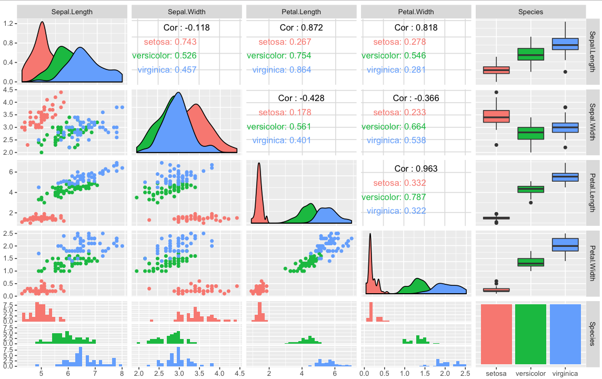

"The design of the language contains a number of fine points and common pitfalls which may surprise the user."
– R Language Definition
Show me every variable in a dataset plotted against every other variable, using appropriate visualizations based on the data type of each variable. Also, show me correlations in the same way. Also, show me a density estimate/histogram of each variable. Also, segment all of the above by one variable that I provide and use that to colour all previously described visualizations and analyses.
r = getOption("repos") # hard code the US repo for CRAN r["CRAN"] <- "http://cran.us.r-project.org" options(repos = r) install.packages("GGally") library(GGally) ggpairs(iris, mapping=ggplot2::aes(colour=Species))

Actually, five different assignment operators O_o
(and they all return their value…)
print((kirk = 1)) print(picard <- 2) print(3 -> sisko) # Anonymous function (function(x) janeway <<- x )(4) print(janeway) # Named function return_input = function(x) {return(x ->> archer)} return_input(5) print(archer) # Assign to 3 different variables paste("scary", {klingon <- "alien" -> romulan}) -> borg print(c(klingon, romulan, borg))
[1] 1 [1] 2 [1] 3 [1] 4 [1] 5 [1] "alien" "alien" "scary alien"
First let's show a little of how R functions work. Optional function arguments can be matched with the Dot-dot-dot object (the actual name in the language definition). list is for heterogeneous collections (i.e. different types)
arb = function(iteration, ...) { return(list(..., iteration)) } arb("NCC", 1701, iteration="D")
[[1]] [1] "NCC" [[2]] [1] 1701 [[3]] [1] "D"
list evaluates its arguments so the Dot-dot-dot object is evaluated. match.call is a function that, with no arguments and called from within a function, returns the unevaluated call of its parent function.
arb_match = function(...) { return(match.call()) } print(arb_match(worf_dialogue=" '")) print(as.list(arb_match(data["emotions"] <- emotion_chip)))
arb_match(worf_dialogue = " '") [[1]] arb_match [[2]] data["emotions"] <- emotion_chip
R allows you to choose exactly where and when your arguments get evaluated.
arb_match = function(...) return(match.call()) removed_calling_function = arb_match(warp_power <- TRUE)[-1] tryCatch(expr = print(warp_power), error = function(e) print("I cannae do it, Captain!")) print(as.list(removed_calling_function[[1]])) eval(removed_calling_function[[1]]) print(warp_power)
[1] "I cannae do it, Captain!" [[1]] `<-` [[2]] warp_power [[3]] [1] TRUE [1] TRUE
parent.frame returns a data structure containing the variables created in the parent function. This is called an environment in R.
get_parent_frame = function(...) { this = 1 frame = 2 vars = 3 res = function(...){ return(parent.frame()) } return(res()) } print(ls(envir = get_parent_frame())) print(environment(get_parent_frame))
[1] "frame" "res" "this" "vars" <environment: R_GlobalEnv>
new.env creates an environment that we can directly manipulate and assign variables within.
get_env = function(...) { temp_env = new.env() attr(temp_env, "name") <- "the final frontier" assign("mission", function() "to boldly go", envir = temp_env) return(temp_env) } print(get_env()) print(get_env()$mission())
<environment: 0x7fc4fd4f67f8> attr(,"name") [1] "the final frontier" [1] "to boldly go"
eval takes an environment as a parameter and is idempotentlibrary(MASS) ship_velocity = function(x){ res = ifelse(x <= 0.25, paste("Ahead", as.character(fractions(x * 4)), "impulse speed"), paste0("Warp ", as.character(x), ", engage!")) res[x == 0.25] <- "Ahead full impulse!" return(res) } data.frame(speeds=ship_velocity(c(0.1, 0.2, 0.25, 1, 6, 10)))
speeds
1 Ahead 2/5 impulse speed
2 Ahead 4/5 impulse speed
3 Ahead full impulse!
4 Warp 1, engage!
5 Warp 6, engage!
6 Warp 10, engage!
. <- function(f, ...) eval(match.call()[-1], envir=parent.frame()) .(library, MASS) .(`=`, ship_velocity, (function(x){ .(`=`, res, .(ifelse, .(`<=`, x, 0.25), .(paste, "Ahead", .(as.character, .(fractions, .(`*`, x, 4))), "impulse speed"), .(paste0, "Warp ", .(as.character, x), ", engage!"))) .(`=`, res, .(`[<-`, res, .(`==`, x, 0.25), "Ahead full impulse!")) .(return, res) })) .(data.frame, speeds=.(ship_velocity, .(c, 0.1, 0.2, 0.25, 1, 6, 10)))
speeds
1 Ahead 2/5 impulse speed
2 Ahead 4/5 impulse speed
3 Ahead full impulse!
4 Warp 1, engage!
5 Warp 6, engage!
6 Warp 10, engage!
@conornash